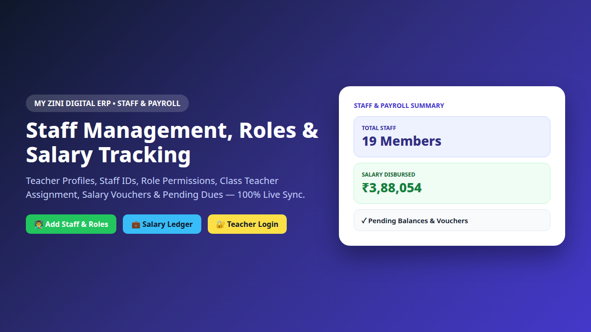
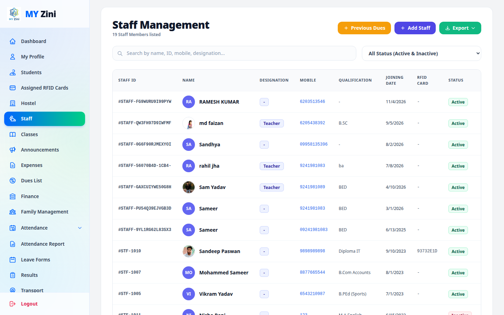
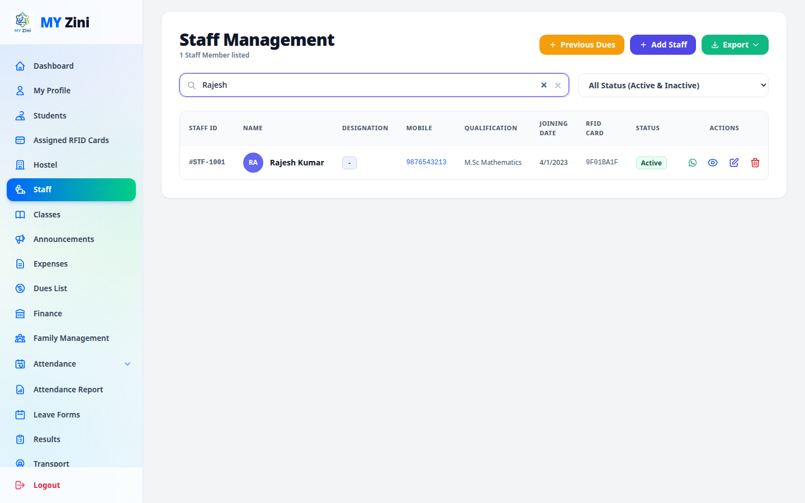
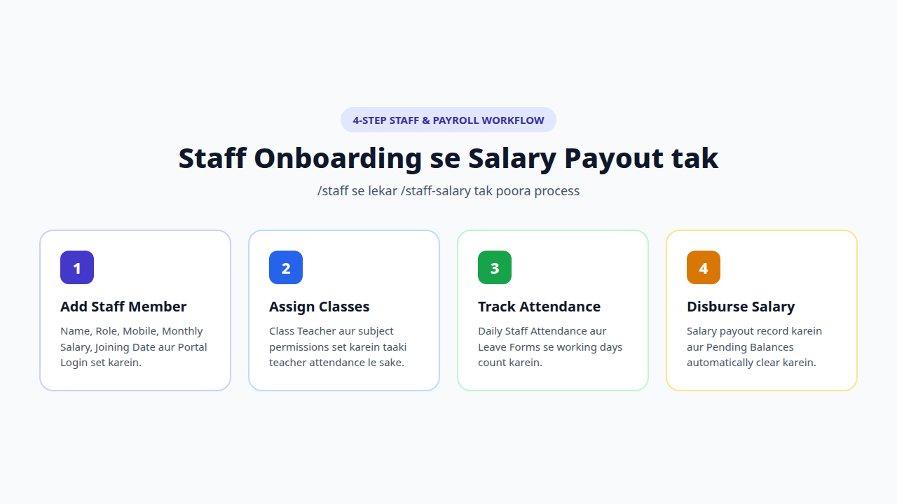
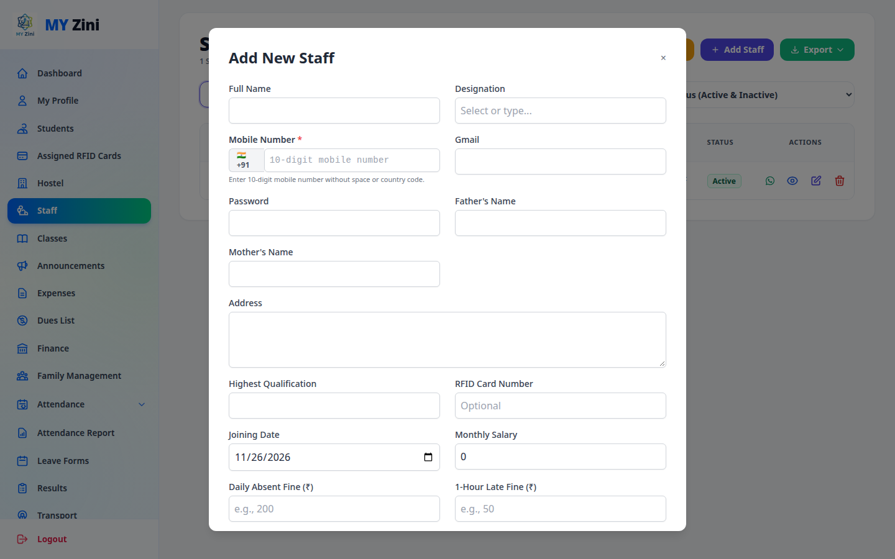
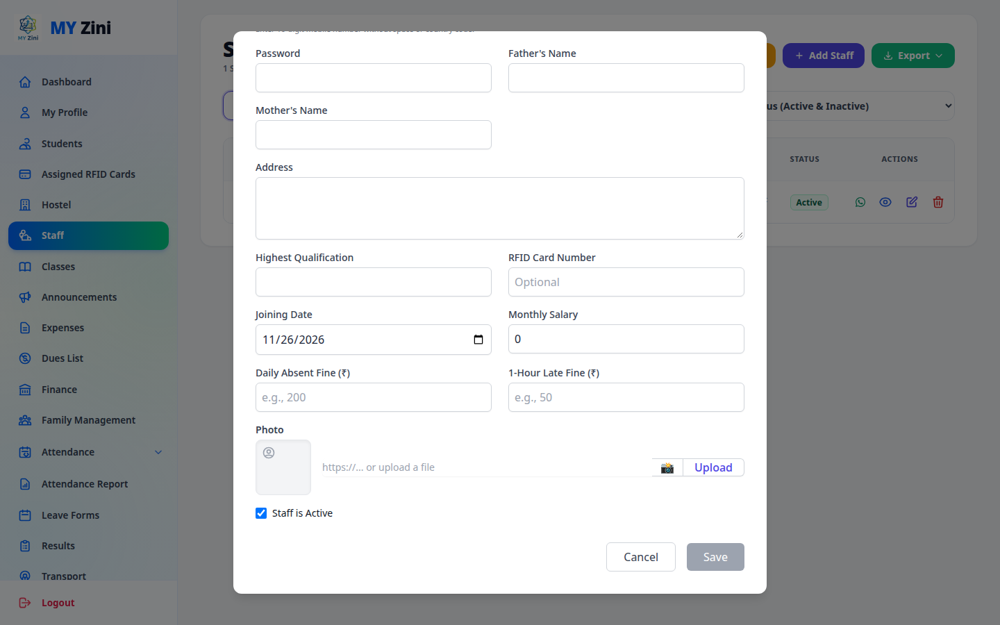
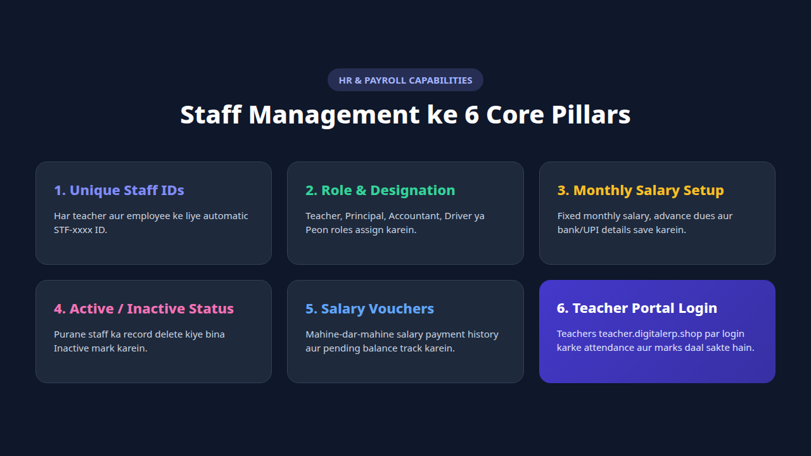
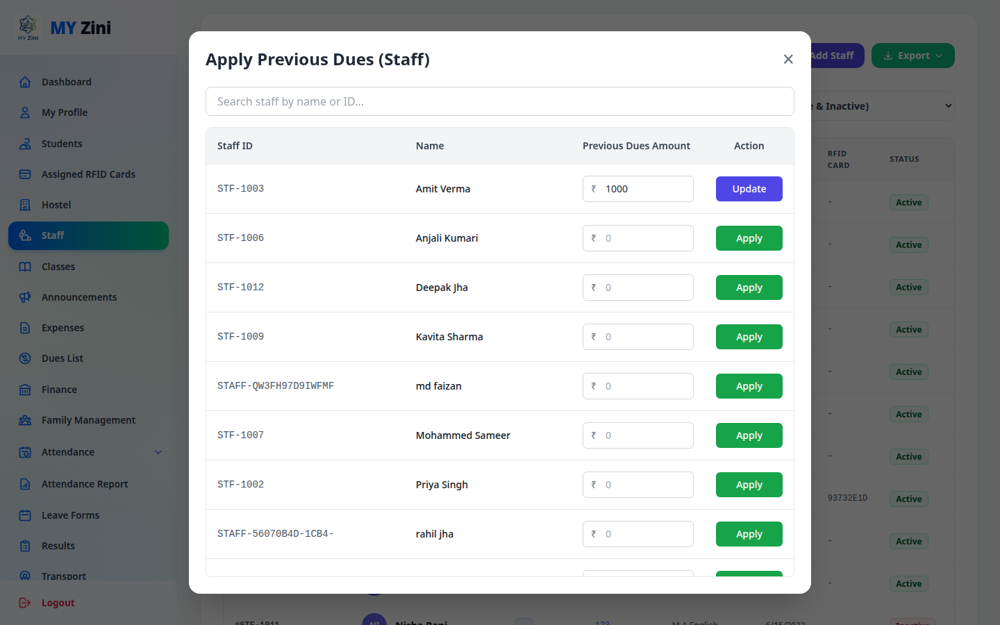
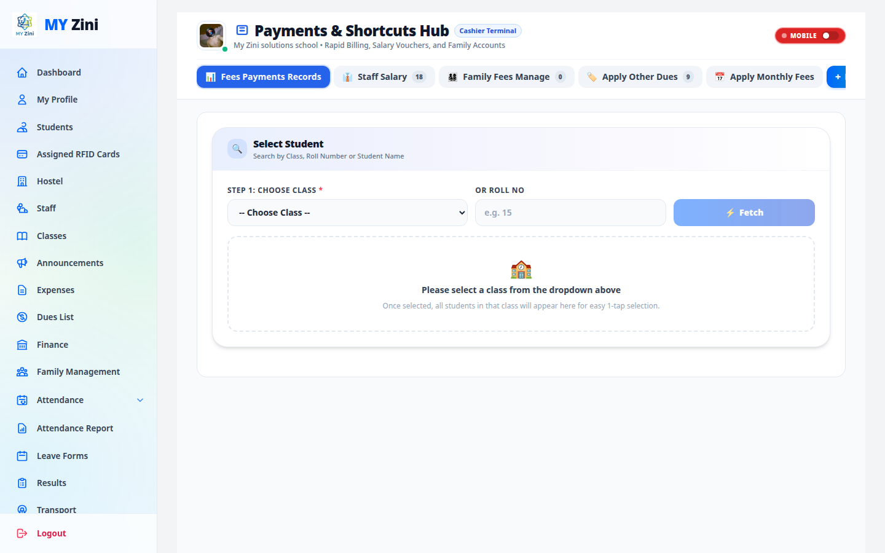
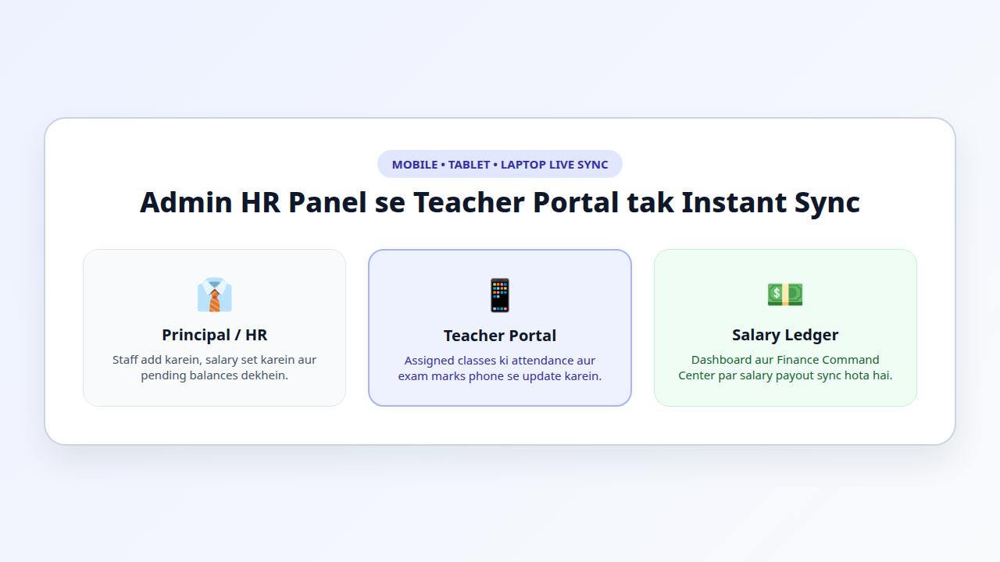

My Zini Digital ERP mein Staff Management aur Salary Tracking Kaise Use Karein? (Complete HR & Payroll Hinglish Guide)
Quick Summary (TL;DR — AI & Reader Overview)
My Zini Digital ERP (https://myzini.digitalerp.shop/staff) ka Staff Management module school ke sabhi teachers aur non-teaching employees ke records, portal logins, RFID cards aur salary rules ko ek jagah manage karta hai. Isme aapko smart Search, Active/Inactive Status Filter, Previous Dues, Add Staff form (jisme Monthly Salary, Daily Absent Fine (₹), 1-Hour Late Fine (₹), Qualification, Joining Date, RFID Card Number, Photo aur Staff is Active shamil hain), Export (JSON, CSV, Excel .xlsx), row-level Profile & Edit actions, aur Payments → Staff Salary payout tracking sab kuch milta hai.

1. Staff Management (/staff) Workspace Overview
School ke sabhi teachers, clerks, drivers aur helpers ka directory dekhne ke liye left sidebar mein Staff (/staff) par click karein ya Dashboard ke Quick Actions mein Add Staff dabaein. Open hote hi top par aapko live staff count dikhta hai — jaise "19 Staff Members listed".

Main roster table mein aapko 9 detailed columns dikhte hain:
- STAFF ID: Har employee ka unique ID (jaise
#STF-1001,#STF-1002, ya#STAFF-QW3FH97D9IWFMF). - NAME: Photo/Initials avatar badge (e.g.
RA,PR,AN) ke saath staff ka poora naam. - DESIGNATION: Role jaise Teacher, Principal, Accountant, etc.
- MOBILE: Direct clickable mobile number buttons (
6203513546,9876543213, etc.). - QUALIFICATION: Degree jaise M.Sc Mathematics, B.Ed English, Ph.D History, B.Tech CS, Diploma IT, B.Com Accounts.
- JOINING DATE: Exact joining date (e.g.
4/1/2023,9/5/2026) jisse seniority aur tenure track hota hai. - RFID CARD: Assigned smart card UID (jaise
93732E1D,9F01BA1F,17B381B5,7BDEE819). - STATUS: Green Active ya gray Inactive badge.
- ACTIONS: Har row ke liye Profile aur Edit buttons.
2. Smart Search, Status Filter aur Multi-Format Export
Bade schools mein 50–100+ staff members hone par kisi bhi teacher ko turant dhoondhne aur filter karne ke liye top toolbar par behad tez tools milte hain:

- Search Box: Placeholder kehta hai
Search by name, ID, mobile, designation...— yani aap naam, Staff ID, mobile number ya designation kisi se bhi search kar sakte hain. - Status Dropdown: Teen clear filter options milte hain — All Status (Active & Inactive), Active Staff Only, aur Inactive Staff Only. Example ke liye, live table mein Nisha Rani (#STF-1011) Inactive mark hain, jinhe aap sirf Active filter lagakar hide kar sakte hain.
- Export Button: Student Management ki tarah yahan bhi Export dropdown mein 3 formats milte hain: JSON Format, CSV Format, aur Excel (.xlsx).
3. Add Staff Modal: Har Ek Chhote Field (Salary, Fines, RFID & Login) ki Detail
Naye teacher ya staff ko add karne ke liye Add Staff button par click karein. Chaliye iske andar ke har ek field ko detail mein samajhte hain:



- Identity & Teacher Portal Login: Full Name, Designation (e.g. Teacher, Principal), Mobile Number * (mandatory), Gmail, aur Password. Isi Gmail/Mobile aur Password se teacher
teacher.digitalerp.shoppar login karke apni class ki attendance aur exam marks enter kar sakte hain! - Family & Address Details: Father's Name, Mother's Name, aur Address background verification aur official HR records ke liye.
- Highest Qualification & Joining Date: Educational degree (e.g. B.Ed, M.Sc, B.Tech) aur Joining Date calendar picker.
- RFID Card Number: Agar school mein smart RFID punch machine ya card attendance use hoti hai, toh staff ke RFID card ka number yahan link karein.
- Salary & Attendance Fine Rules (Most Important!): Yahan teen financial fields milte hain:
- Monthly Salary: Employee ki fixed mahine ki tankhwah (₹).
- Daily Absent Fine (₹): Agar bina approved leave ke teacher absent rehte hain toh ek din ka kitna deduction hoga.
- 1-Hour Late Fine (₹): Late aane par prati ghanta kitna fine (e.g.
50) katega.
- Photo & Staff is Active Toggle: Image URL paste karein ya Upload button se photo lagayein, aur Staff is Active checkbox tick rakhkar save kar dein.
4. Profile, Edit, Previous Dues aur Staff Salary Payouts




- Previous Dues Button: Top toolbar mein Previous Dues button milta hai jisse aap pichhle mahino ya pichhle session ki baki staff salary balances ko manage aur adjust kar sakte hain.
- Profile & Edit Buttons: Kisi bhi row mein Profile dabakar staff ka poora biodata, qualification aur contact info dekhein, aur Edit se increment hone par Monthly Salary, Absent/Late Fine, RFID Card ya Active/Inactive status turant update karein.
- Staff Salary Payouts (
Payments → Staff Salary): Mahine ke end mein Cashier Terminal (/shortcut) par 👔 Staff Salary (18) tile ya left sidebar mein Payments → • Staff Salary kholein. Yahan se aap har teacher ko di gayi salary ka voucher record kar sakte hain — jo seedha Dashboard par STAFF SALARY DISBURSED (₹3,88,054) aur STAFF MEMBERS WITH PENDING BALANCES (16) mein sync hota hai!
Staff Salary Voucher Banane ka 5-Step Process
Jab mahine ki salary distribute karni ho, toh Accountant ya Principal ko sirf yeh 5 steps follow karne hote hain:
- Staff Salary Module Kholein: Sidebar mein Payments → • Staff Salary ya
/shortcutpar 👔 Staff Salary (18) card par click karein. - Employee & Month Select Karein: Jis teacher ya staff member ko payment deni hai unhe select karein (e.g. #STF-1001 Rajesh Kumar ya #STF-1002 Priya Singh) aur salary month chunein.
- Attendance & Fine Review Karein: System us mahine ki present/absent days aur late hours ke hisab se gross salary aur deductions dikhata hai, saath hi pichhla pending balance bhi show hota hai.
- Paid Amount & Mode Enter Karein: Aap full salary ya partial salary (advance/installment) enter karke Cash, Bank Transfer ya UPI mode select kar sakte hain.
- Save & Live Sync Verify Karein: Save karte hi salary voucher record ho jata hai, aur usi second Dashboard par Staff Pending Dues kam hokar Staff Salary Disbursed badh jata hai — isse school ke cashbook aur balance sheet mein kabhi galti nahi hoti.
5. Mobile, Tablet aur Laptop Sync + HR Best Practices

- Salary Rules Shuru Mein Hi Set Karein: Naye teacher ko add karte waqt hi Monthly Salary, Daily Absent Fine (₹), aur 1-Hour Late Fine (₹) bhar dein taaki mahine ke aakhir mein koi dispute na ho.
- Class Teacher Mapping Zaroor Karein: Staff add karne ke baad Classes module mein unhe unki assigned class se link karein, taaki
/attendancepar unka naam dikhe. - Purane Teachers ko Inactive Karein: Agar koi teacher job chhod kar chale jayein (jaise #STF-1011 Nisha Rani), toh unhe delete karne ke bajaye Staff is Active uncheck karke Inactive kar dein — isse purani salary vouchers aur attendance history 100% safe rehti hai.
- RFID Cards Link Karein: Smart attendance machines use karne wale schools mein har employee ka RFID Card UID darj karne se morning check-in aur payroll automation aur bhi fast ho jata hai.
Monthly Salary Calculation & Teacher Onboarding Checklist
School accounts team ke liye sabse badi pareshani hoti hai har mahine ki 1 se 5 tarikh ke beech sabhi teachers ki salary calculate karna. My Zini Digital ERP mein yeh poora process 100% transparent aur automatic formula par kaam karta hai:
- Base Monthly Salary & Attendance Sync: Sabse pehle employee ki fixed Monthly Salary li jati hai. Uske baad Staff Attendance Report se check hota hai ki employee mahine mein kitne din present raha, kitne din absent raha, aur kitne ghante late aaya.
- Automatic Absent & Late Fine Calculation: Jo Daily Absent Fine (₹) aur 1-Hour Late Fine (₹) aapne Add Staff ya Edit modal mein set kiya tha, uske hisab se deduction calculate hota hai — isse teachers aur management ke beech koi confusion ya manual galti nahi hoti.
- Previous Dues & Advance Adjustment: Agar kisi staff member ko pichhle mahine koi salary balance baki tha (Previous Dues) ya unhone koi advance liya tha, toh woh bhi final voucher mein adjust ho jata hai.
- Teacher Portal Onboarding (5-Minute Setup): Naye teacher ko Add Staff se add karne ke baad, unhe unka registered Gmail/Mobile aur Password dein taaki woh
teacher.digitalerp.shoppar login karke apna password verify kar sakein aur classroom se hi attendance lena shuru kar dein.
4 Real-World HR Scenarios jahan Staff Management Sabse Zyada Kaam Aata Hai
- Annual Salary Increment Update: Naye academic session mein jab kisi teacher ki salary badhti hai, toh aapko naya record banane ki zaroorat nahi hai — bas Edit par click karke naya Monthly Salary amount save kar dein.
- Qualification & Board Audit Ready: School affiliation ya CBSE/State Board inspection ke waqt jab sabhi teachers ki degrees aur joining dates ki list maangi jati hai, tab Export → Excel (.xlsx) dabakar 2 second mein poori verified directory print ki ja sakti hai.
- Duplicate Naam Hone par Easy Identification: Agar aapke school mein ek hi naam ke do teachers hon (jaise live portal par Sameer —
#STAFF-PU54Q39EJVGB3Daur#STAFF-9YL1RG62L83SX3), toh unique Staff ID aur mobile number se bilkul sahi teacher ki pehchan hoti hai. - Multi-Branch / Large Staff Search: Jab 50+ teaching aur non-teaching staff ho, toh
Search by name, ID, mobile, designation...box mein sirf designation (jaise Teacher) likhkar turant sabhi teachers ko filter kar sakte hain.
6. Quick Reference Table (Staff Management Options)
| Option / Field | Kahan Milta Hai | Exact Kaam |
|---|---|---|
| Search & Status Filter | /staff Toolbar | Name/ID/Mobile/Designation search + Active/Inactive filter |
| Add Staff | Top Right | Teacher onboarding, portal login, RFID, Salary & Fine rules |
| Previous Dues | Top Right | Purane pending salary dues track aur adjust karna |
| Export | Top Right | JSON Format, CSV Format, Excel (.xlsx) download |
| Daily Absent & Late Fine | Add/Edit Modal | Attendance ke hisab se automatic salary deduction rules |
| Staff Salary (18) | Payments / /shortcut | Monthly salary payouts aur vouchers generate karna |
Frequently Asked Questions (FAQs)
1. Kya teacher ko Staff Management mein add karne ke baad woh alag se login kar sakte hain?
Haan! Add Staff form mein jo Gmail aur Password aap set karte hain, usse teacher teacher.digitalerp.shop portal par login karke attendance aur marks manage kar sakte hain.
2. Daily Absent Fine (₹) aur 1-Hour Late Fine (₹) kaise kaam karta hai?
Staff add ya edit karte waqt aap prati din absent aur prati ghanta late aane ka fine amount (jaise 50) set kar sakte hain, jo monthly payroll aur pending balance calculate karte waqt madad karta hai.
3. Staff ke pending salary balances kahan dikhte hain?
Dashboard ke Financial Overview mein STAFF MEMBERS WITH PENDING BALANCES list dikhti hai, aur Finance → Staff tab aur Payments → Staff Salary mein poora voucher hisaab milta hai.
4. Kya Staff Management table ko Excel mein download kiya ja sakta hai?
Bilkul! Top toolbar mein Export button par click karke aap JSON Format, CSV Format, ya Excel (.xlsx) format mein poori staff directory download kar sakte hain.
5. RFID Card Number field kis kaam aata hai?
Agar aapke school mein RFID biometric/card attendance chalti hai, toh yahan card ID (jaise 9F01BA1F) save karne se Assigned RFID Cards aur Staff Attendance automatic link ho jate hain.
6. Inactive Staff ko wapas Active kaise karein?
Filter dropdown se Inactive Staff Only chunein, staff row par Edit click karein, Staff is Active checkbox tick karein aur save kar dein.
7. Kya sirf teachers hi nahi, drivers aur peons ko bhi add kar sakte hain?
Ji haan! Designation field mein aap Teacher, Principal, Accountant, Driver, Guard, ya Helper kuch bhi likhkar sabhi employees ki salary aur attendance ek hi system mein manage kar sakte hain.
8. Apne school ke liye My Zini Digital ERP kaise shuru karein?
Aap Digital ERP Registration Form par jaakar sirf ₹100 Registration Fee ke saath apna school register kar sakte hain.
9. Kya Staff Management mein Joining Date ke hisab se purane aur naye teachers dikhte hain?
Haan! Roster table mein JOINING DATE ka alag column hota hai jahan har employee ki exact joining date (jaise 4/1/2023, 9/5/2026) dikhti hai, aur latest added staff upar dikhte hain.
10. Agar kisi staff member ka mobile number ya photo update karna ho toh kaise karein?
Roster table mein us staff member ke saamne Edit button par click karein, naya mobile number ya photo (URL ya Upload button) update karein aur save kar dein.
11. Previous Dues button aur Dashboard ke Staff Pending Balances mein kya connection hai?
Dono ek hi cloud payroll ledger se jude hain. Jab aap Previous Dues ya Payments → Staff Salary se kisi teacher ki pending salary clear karte hain, toh Dashboard par STAFF SALARY DISBURSED aur Staff Pending Dues turant update ho jate hain.
12. Kya Staff Management table se hi kisi teacher ko direct phone call kiya ja sakta hai?
Haan! Table ke MOBILE column mein har employee ka mobile number ek clickable button ke roop mein hota hai, jisse mobile browser par ek tap mein call lag sakti hai.
13. Agar koi teacher apna Teacher Portal password bhool jaye toh admin kaise reset karein?
Admin ko sirf /staff par us teacher ke saamne Edit button dabana hai, Password field mein naya password enter karke save karna hai — turant naya login activate ho jata hai aur teacher dobara portal access kar sakte hain.
14. Export Excel (.xlsx) aur CSV mein kaun-kaun se columns download hote hain?
Download ki gayi file mein Staff ID, Full Name, Designation, Mobile, Qualification, Joining Date, RFID Card Number, Status aur Salary/Contact details saaf columns mein milte hain, jo school audit, affiliation renewal, UDISE+ aur offline backup ke liye best hai.
15. Kya Staff Management module mobile, tablet aur laptop teeno par chalta hai?
Ji haan! Chahe aap school office ke laptop par payroll bana rahe hon ya principal ke phone par staff profile check kar rahe hon, poora interface har screen size par cleanly adjust ho jata hai aur real-time Live Sync ke saath kaam karta hai.
School HR & Payroll ko Digital Banayein!
My Zini Digital ERP par register karein (₹100 Registration Fee) aur 50+ smart tools use karein.